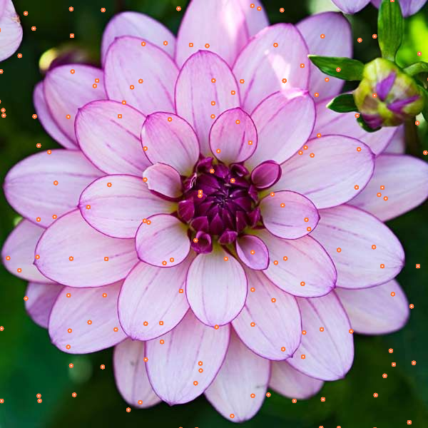
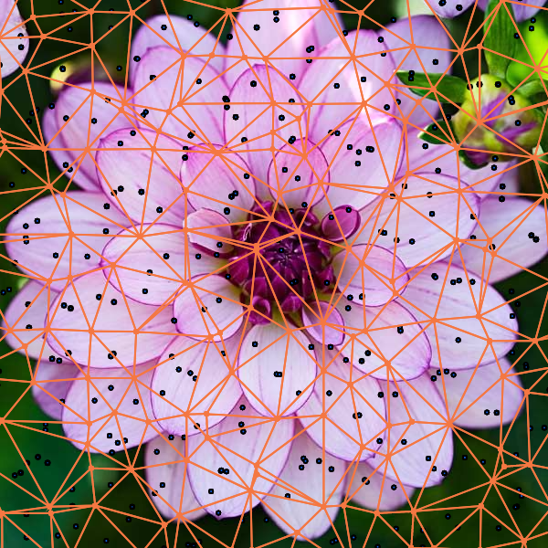
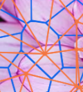

Use the "more info" buttons to see a more detailed breakdown of what goes on in the app.

After an image has been uploaded a set of points is generated in along a grid inside of the image. The spacing of the points is constrained by the x-spacing and y-spacing sliders. The points are then given a randomly generated movement vector, constrained by the max offset slider. The points are then pushed along that vector, in order to randomize their position. They can be seen as the orange dots scattered across the image.
This new array of points will be the verticies for our triangles in the delaunay triangulation process. The final image of the stain glass gets its appearence from voronoi tesselation, which just so happens to be the dual graph of a delaunay mesh. So computing the triangular mesh gives us a fast and easy way to generate the voronoi cells that appear in the final image.

Then the circumencenter for each triangle is calculated (blue dots), these points will be the verticies for the voronoi cells that actually make up the final image.
Each of these points are connected to form the polygons that make up the final tesselation.
This is where most of the work is done in the algorithm. The process of connecting the points in the porper order seems daunting at first, but looking closely at the image will reveal a special pattern.
Each voronoi polygon surrounds only one of the triangular mesh's verticies. This means that we can solve the daunting task by just figuring out each triangles neighbor, which can be done by checking if any two triangles share two verticies (although this method is easy, it can be very slow with lots of triangles, because each triangle checks every single other triangle, and also takes up a lot of memory for dense meshes). We will save the neighbors for later.
Now that we have all of the triangles, and all of the triangles have their neighbors, we can then move on to find all of the points in the polygon. We can do this looping through every point in the "grid" we first created, and for each of those points, loop through every triangle and see if any of its verticies tough that point. If one just so happens to do so, then it's circumcenter is added to the unsorted polygon.
Now that we have all of the polygons, we need to sort the points in some sort of order to we can draw them properly. We can do this recursively by starting at one triangle that has it's circumcenter as a vertex in the polygon, then we look at each of its neighbors, to check if: A. it's circumcenter is in the polygon. B. if it's circumcenter hasn't already been added to the sorted polygon. C. if we aren't looking at the polygon we just came from. If our triangle and it's circumcenter pass this test, then it is added to the sorted polygon, otherwise, keep checking the neighbors. Once we find it and it's added, we do the same thing for the one we just found. This keeps happening until the sorted polygon has the same number of verts as the unsorted, and we can finally finish up and draw the polygons!
Finally the image is ready to be filtered. First the polygons are drawn by filling them in with a color sampled from the image, and then outlined with a black border that varies in length. Finally, the black outline is drawn to completely finalize the image.
The colors are sampled from where the singular triangle mesh vertex in each voronoi cell lies.
Full source code for the whole project can be found on github at: https://github.com/nelsasser/stainglass